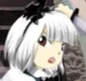

 Hello, I'm ZPS. I was born in 1999 and have been gaming for almost my entire life (according to my parents, this started in early 2000 when I was just a few months old!) Pretty much just educational games at that time though which shouldn't come as a surprise. Early in my childhood, my favorite video games were the first two Super Monkey Ball games, which I think contributed to my love for arcade games later in life. Those games are very much made in the arcade style (Super Monkey Ball 1 even being a port of an arcade game) and have gained a reputation for their difficulty. I first beat the Story Mode of Super Monkey Ball 2 some time around 2004, and later was able to unlock and beat the game's Master mode. Super Monkey Ball 1 Master would have to wait a while though, that one took me until 2013, that game is significantly harder due to only having 3 lives. Another notable event happened in 2011. Super Monkey Ball 2's Story Mode keeps track of your in-game time, and I wanted to see how quickly I could beat it. I looked online to see if anyone else had tried this, and, of course, they had. This was how I discovered speedrunning. This was something I never put too much time in to, but had some interest in nonetheless.
I first got in to retro gaming near the end of 2013, and at first my main games were the 2D Sonic the Hedgehog games. At the time I also played several NES games such as Super Mario Bros (a game I still haven't beaten to this day) and Metroid. I even played some shmups back then, even getting a 1cc in Ai Cho Aniki some time in 2014, my first ever shmup 1cc. Retro gaming wasn't normally my main focus, however.
My first proper taste of competitive gaming came in May 2013 when I decided to join Race2Play, a sim racing league Racing games were another passion of mine originating in childhood, especially after Forza Motorsport 3 came out in 2009. I'd like to say I found moderate success in this league, I did win a few races but I was certainly never one of the top drivers. Unfortunately, Race2Play shut down at the end of 2016, and I felt a need to find something else to sink time in to.
And that brings us to how I got in to shmups. In January 2017, some series of events somehow reminded me that Touhou existed. Touhou was something I had known about since the McRoll'd meme back in 2008 but never really gained an interest in because I thought it was too far above my skill level. However, this time, I felt like I just had to play it and try to beat one of the games, so I did. On February 1, 2017, I played The Embodiment of Scarlet Devil for the first time, officially starting my shmup career. My first goal was to just clear Easy Mode with continues, which took me just one day... although I did play the game for 8 hours straight on that day. Next up was a Normal 1cc with max starting lives, because I wanted to unlock the Extra stage. This is a big difficulty increase over my previous achievement, but I was determined to do it. I did have some help though, because at around the time I first played, I also met two Touhou players that would later play a big role in advancing my career, CopperMarten and LorennaRose. Mainly how they helped was simply by streaming the games a lot and being far better Touhou players than I am, Coppper at the time focusing on Legacy of Lunatic Kingdom LNBs and Lorenna going for EoSD ExNN. I feel like just by watching their streams I was able to pick up on certain skills that made my play better. I did get the 1cc on February 8, 2017, my first 1cc of a Touhou game. Then, of course, came clearing the Extra stage, which I did towards the end of the month. On March 14, CopperMarten invited me to his Discord server, Mountain of Fail. This was probably the single best thing that could have happened to me for my Touhou career, as this server was a very active community with a lot of high level players. Soon after, I realized I had found my new gaming home.
Fast forward to May, and here's where Lorenna comes in. I had a few Normal 1ccs and Extra clears, and she had gotten her ExNN, and had started going for LNB. Watching her streams, I realized I'd seen a ton of EoSD, and could probably 1cc Hard Mode. Surprisingly, this grind only took me 2 days, and I got my first Hard 1cc on May 30, 2017. After this, I decided I wanted to go for one of the hardest things I've attempted in gaming: an EoSD Lunatic 1cc. I probably went in to this completely unprepared, and this ended up being a serious grind. After 2 and a half months though, on August 12, 2017, I did it. Unfortunately, at around the same time I got my Lunatic 1cc, Mountain of Fail closed. From there, I moved on to Zigzagwolf's Discord server, where I stayed for several months.
The next big moment in my Touhou career came in March 2018: the 10th Dodging Rain Competition. This was the firs time I felt like I was good enough to play Touhou competitively, and so I signed up, specifically for LLS Lunatic Survival, as I had recently gotten my first LNB in that game. Two other players, Starshine and yeashie, also signed up for this category, and we became very close friends and eventually created Extend Danger. This server was originally meant to be just a private server for us to discuss LLS survival strats to make LNN viable, but eventually it generally became a small PC98 community. Fun fact, it was in this server that the cause of the Shinki Death Glitch in Mystic Square was discovered! They also helped me branch out to find more of the Touhou gameplay community, and indirectly helped me branch out to more shmups in general.
At around this time, a high level Touhou player called Mino was going for an Ultra 1cc in Mushihimesama. I occasionally watched his streams of this, and this was my first exposure to CAVE games. Watching these streams also made me want to try it out for myself, so I bought the game on Steam. Later, I remembered I had the game, and decided I wanted to 1cc it on Maniac mode. I told the members of Extend Danger about this, and Starshine wanted to join me, so we had a race to see who could 1cc first. The result? We both 1cc'd the game 36 minutes apart from each other. From this, we got in to CAVE games, and by extension arcade shmups in general, and eventually joined that community as well.
And that leads us to where we are today. I now play a pretty good variety of shmups, from the Touhou games I started out with, to classic shmups like what Toaplan made. Shmups still aren't my only genre though, I do still occasionally play racing games, and oddly enough, have taken an interest in the Roblox obby game Juke's Towers of Hell. Going in to the future, I think I'll continue to play shmups even as my main genre for several more years. Who knows what I'll eventually be able to do though?